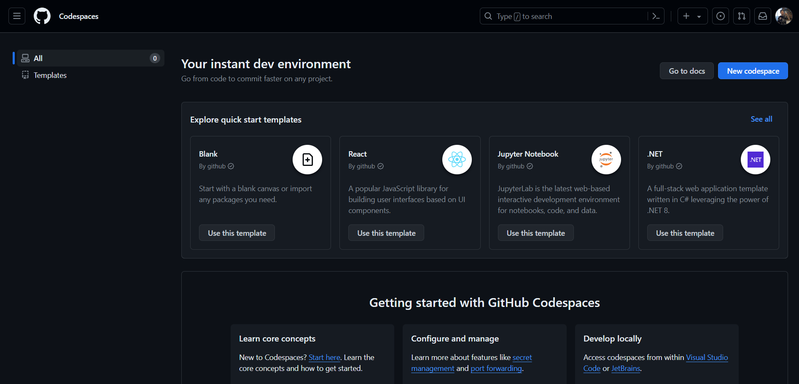
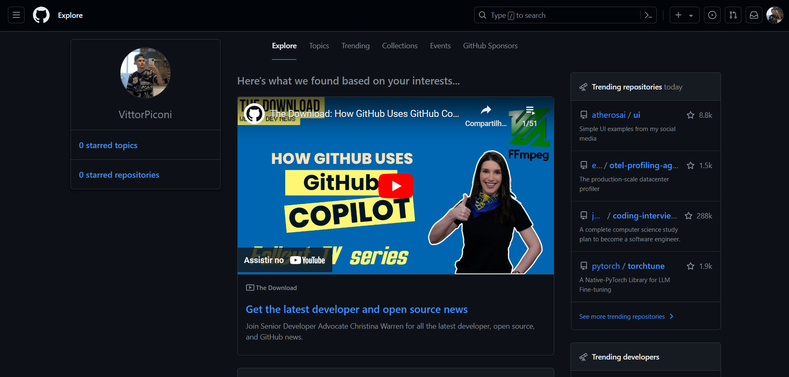
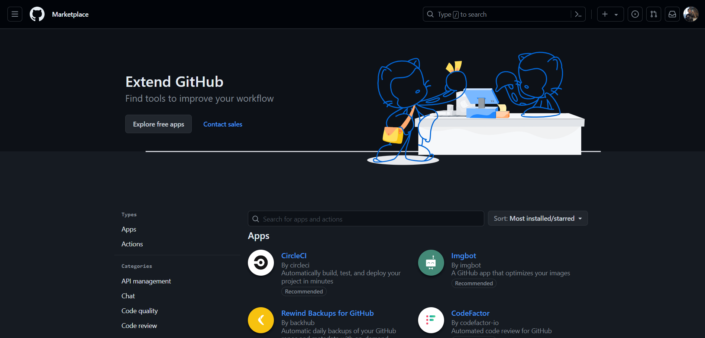

APP Git Hub
O GitHub Desktop é um aplicativo de desktop para o GitHub que permite que você gerencie seus repositórios e projetos de forma fácil e eficiente. Com o GitHub Desktop, você pode clonar repositórios, criar branches, fazer commits, e push de alterações para o GitHub. O GitHub Desktop também oferece suporte a pull requests, permitindo que você revise e faça merge de alterações de outros desenvolvedores. Além disso, o GitHub Desktop tem uma interface simples e intuitiva, tornando-o fácil de usar para desenvolvedores de todos os níveis. Com o GitHub Desktop, você pode gerenciar seus projetos do GitHub sem precisar usar a interface web, o que pode ser mais lento e menos eficiente. O GitHub Desktop é uma ferramenta essencial para qualquer desenvolvedor de software que deseja gerenciar seus projetos do GitHub de forma eficiente e colaborar com outros desenvolvedores.
Inicio
Na página inicial do github encontraremos o menu principal do app github desktop, onde temos os seguintes titulos File, Edit, View, Repository, Branch, Help. E logo abaixo temos 3 outras guias, sendo elas Current repository, Current branch e Fetch origin
 |
 |
| Na primeira vez que você iniciar o App GitHub desktop ele irá aparecer vazio, da mesma forma que a imagem acima. A partir daqui, você pode clonar repositórios, criar branches, fazer commits, e push de alterações para o GitHub. A página inicial do GitHub Desktop é a sua porta de entrada para gerenciar seus projetos do GitHub de forma eficiente e colaborar com outros desenvolvedores. | Nessa segunda imagem vemos como seria se você já tivesse aberto algum repositório e tivesse feito alterações nele, destacando onde tem adições no código, destacado em verde e aonde foi retirado linhas do código destacado em vermelho, e na parte esquerda da tela vemos a parte onde criamos os commits, e o histórico de commits. |
 |
 |
| Current Repository: Nessa parte podemos ver todos os projetos que já criamos, de primeiro momento podemos pesquisar qual repositório queremos ou apenas rolar para baixo, logo após temos o botão "add" onde podemos clonar, criar ou adicionar um repositório, e por fim temos os seus repositórios abertos ou alterados recentemente e todos os repositórios, seja eles privados, públicos ou apenas forks. | Discussions: é onde as conversas acontecem em seus projetos no GitHub. É como um fórum incorporado ao seu repositório, onde você e outros membros da comunidade podem discutir ideias, fazer perguntas e colaborar de forma mais ampla além do código. É um espaço para trocar insights, receber feedback e construir uma comunidade em torno do seu projeto. É como uma sala de reuniões virtual onde todos são bem-vindos para participar e contribuir para o crescimento e sucesso do projeto |
| Codespaces: é uma funcionalidade do GitHub que permite criar, editar e colaborar em projetos diretamente do navegador. É como ter um ambiente de desenvolvimento totalmente funcional hospedado na nuvem, onde você pode acessar seus projetos de qualquer lugar, sem precisar configurar nada em seu próprio computador. Com Codespaces, você pode desenvolver código rapidamente, testar novas ideias e colaborar com outras pessoas de forma eficiente, tudo dentro do navegador. É uma maneira conveniente e flexível de trabalhar em seus projetos, especialmente para equipes distribuídas ou para quem precisa de ambientes de desenvolvimento consistentes em diferentes dispositivos. |  |
|  | Explore: é como uma janela para o vasto ecossistema de projetos e comunidades no GitHub. É onde você pode descobrir novos projetos interessantes, explorar tendências populares e encontrar inspiração para seus próprios projetos. É como um mapa interativo que o guia através de uma infinidade de repositórios, usuários e tópicos, permitindo que você mergulhe em diferentes áreas de interesse e encontre projetos que possam despertar sua curiosidade. É uma maneira de se conectar com a comunidade do GitHub, descobrir o que está acontecendo e encontrar novas oportunidades de colaboração e aprendizado. |
| Marketplace: é como uma loja de aplicativos para o GitHub, oferecendo uma variedade de ferramentas, integrações e recursos adicionais para melhorar sua experiência de desenvolvimento. É onde você pode encontrar extensões, serviços e soluções desenvolvidas pela comunidade e por empresas parceiras, projetadas para complementar e estender as funcionalidades do GitHub. É como um hub central onde você pode navegar por uma variedade de opções para automatizar fluxos de trabalho, melhorar a qualidade do código, realizar integrações com outras ferramentas e muito mais. É uma fonte valiosa de recursos para ajudar a tornar seu processo de desenvolvimento mais eficiente e produtivo. |  |